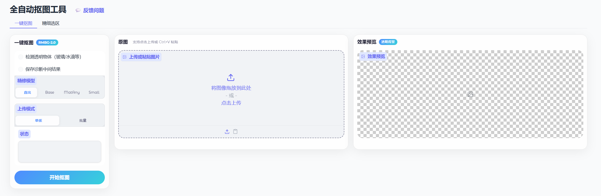
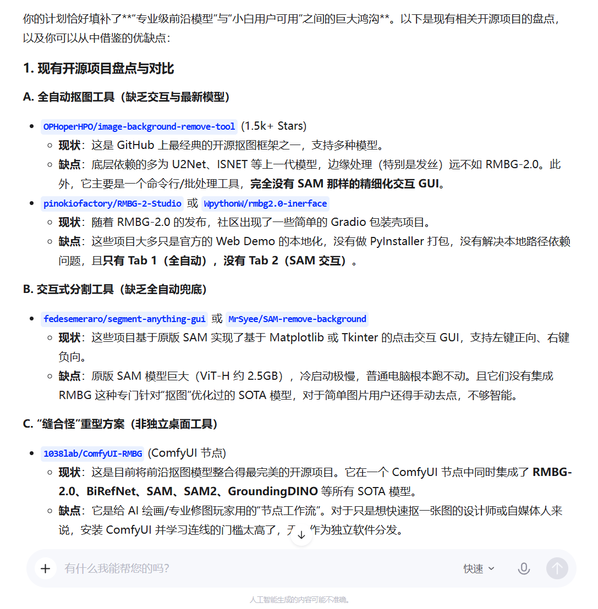
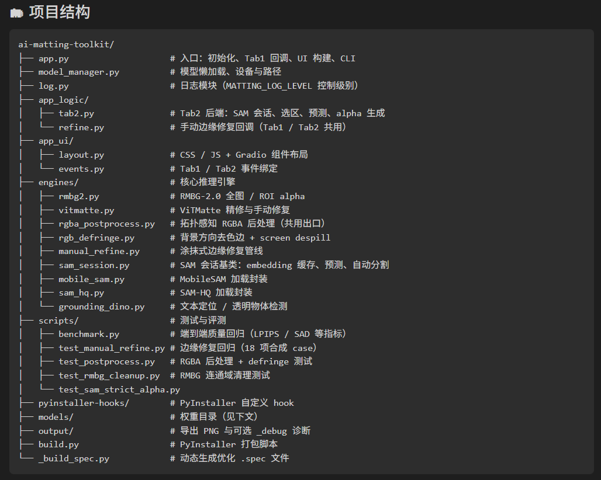

· HACKATHON
-
01
为什么做 · 工具长什么样 痛点与可行性·本地一键抠图P03—04
-
02
调研 · 定边界 机制扫全再收敛·延伸用顺手的方式收束边界P05
-
03
借力 AI · 把握原理 机制自回归 · 注意力不均 · 分布拟合 · 概率输出 · 延伸锚点续写 · 一次一件事 · 外部验真 · 等 7 条P06—16
-
04
工程 · 高内聚低耦合 机制高内聚低耦合·延伸想清边界再动手P17
-
05
产品 · 尽早给用户用 机制不做真实使用必有偏差·延伸尽早交出去P18
为什么做这个
痛点池里，选了一个相对传统但仍真实的需求——UI / 策划要抠图，又希望数据不出本机。
抠图高频又琐碎，但内部素材不愿走云端——现成方案多是上传式，对不上。
记得 Meta 开源的 SAM——开源、可本地跑，这件事就可行；数据也不用出本机。
本地 Gradio + 开源模型一拼，离线也能直出，不依赖外部服务。
本地上传一张图 → 得到抠图结果

扫全再收敛 · 收成做 / 不做
扫全再收敛——这里最该 boil the ocean。
用哪套调研工具 / skill；重型流程（如 gstack、superpowers 调研组件）会加复杂度，不是必选项。
按自己顺手的方式扫全即可，收成「做什么 / 不做什么」。

调研边界
推理解码闭环 · 后面吃前面
训练阶段可并行（因果 mask）· 本图只画推理解码
逐 token 续写；后面条件于前面。
早错会滚雪球；「检查自己」也是在既定前文上续写，易自圆其说；前文里有正确锚点，也会顺着续下去。
只要还是 next-token 生成，条件依赖就在——换模型、换 Chat / Agent 壳、加长上下文，变的是窗口与界面，不是「后面吃前面」这件事。
推理一次解一个 token · 因果注意力读整段前文 · KV Cache 复用 · 早错会滚雪球
延伸锚点续写
给对的锚点，续写自然更对——把跑通的路径放进前文。
空聊「你设计一套」不成 → 拉相关开源进上下文当锚点，再按本仓库结构改写落地。
弱模型自己摸索抽偏 → 强模型先跑通一条带验证的路径留在前文 / 仓库里 → 再换回弱模型，是在续这条锚点，不是从头发明。
端口、别碰打包等写进 Agent 短规则 / 项目约定——每次开干自动进条件，等于默认带着正确前缀开写。
延伸一次一件事
一次只续一个可验收目标——混着续越写越歪。
一件事里塞「分割 + 修边 + 打包」→ 改乱、漏约束 → 拆开做。
修布局：Goal 写清要达成什么 + 怎么验收，比一步步遥控改哪一段更快更稳。
定位 bug：先用便宜模型多轮问「还缺什么信息」；信息够了再换强模型修——探路和动手拆开，也更省。
延伸外部验真
别让写代码的那条对话自己当考官——换窗外的来验，验法越笨越好。
改完不在同一窗自评 → 新开会话审 staged diff，上下文隔离。
想并行干别的：先让模型写出验证脚本，再开 Goal（小模型裁判 + 自动跑验收）盯到完成——墙钟时间往往更长，但不占用我手动点验，可以去干别的事。
粘贴靠跑页面钉死 Gradio 行为；两 Tab 布局靠可跑脚本验收。
进了上下文 ≠ 被同等用到
实验文献里的经验现象（如 Lost in the Middle），不是「注意力必然 U 型」的理论证明；具体形状随模型 / 位置编码会变。
只要还靠注意力读长上下文，「并非均匀用到每一段」就反复出现；用的是不均匀性，不是把 U 型当公理。
用的是不均匀性，不是把 U 型当公理。
延伸坑写代码旁
踩坑经验写在相关代码旁——需要才加载，改到这块注释和代码同屏。
写进相关 UI 文件后，平时不塞进全局聊天；真改上传时打开文件才带上，很少再走回头路。
文件职责、迭代踩坑跟着文件走：Agent 动到哪一段，就加载哪一段的说明——少靠「我记得哪次聊天说过」，也少在无关任务里被旧坑叙事干扰。
需要才加载；加载时又在最新读到的那截里，两头都占优。
训练拟合的是数据上的条件分布
训练拟合的是数据上的条件分布，不是唯一标准答案；生成会往分布里概率高的区域靠——常见、通用的解更容易出现。
按似然 / 交叉熵一类目标学「什么续写常见」，众数偏好就在；换模型、换壳，变的是分布形状，不是变成背题查表。
延伸不能外包所有思考
浅水区交给模型，深水区先自己想透——不能外包所有思考。
浅水 vs 深水 · 谁来主导常见场景 · 模型稳定做对
分布的高频区 — 模型见过太多次，默认就能写对。
→放手外包给模型特异化场景 · 模型落回大众解
分布的低频区 — 模型默认往「大家都这么做」靠，但常见解往往不对。
→人想透，再当锚点交模型该想的想清楚——这件事没法外包；做了，反而重塑你怎么想问题。
每次生成是一次采样，不是查表
同一条件下可以抽出好样本，也可以抽出坏样本。
解码仍是从（已学到的）分布里抽——调温度、换采样器、换模型，变的是抽法与分布形状，不是变成确定性检索。
延伸逐步加约束
抽偏了就收窄条件再试——别用一次采样给能力下死刑。
顺手改打包、甚至删功能称修好了 → 否决
还是越界 — 条件没收窄
不让做什么越写越清，才得到能用的改法
高尔顿板 · 挡板 = 约束 · 收窄采样空间
延伸多候选再选
与其迷信单发，不如多抽几个候选，用便宜的验真器挑一个。
同一问题扔给多个模型，摊开对比再收敛——不死磕第一次。
效果不满意就改 prompt 再试，多抽几轮成本极低。
AI 写的代码耦合了，炸得比人写的更快——所以更要守。
该在一起的放一起 · 不相关的别缠在一起
Agent 改代码快，耦合了炸得更快——不是不用守，是更要守。想清边界再动手，把每次改动的炸裂半径关在模块里。
主文件行数上千后，按职责拆成独立模块
看顶层目录就知道去哪改，不用读完整个项目
边界清晰后，每次改动不跨层污染

仓库结构 · 细粒度 commit
结构守住了，最后一站把东西交出去——用户会替你校准边界。
不做真实使用 · 必有偏差
不做目标用户的真实使用，设计偏差一定存在——开发者自评和功能清单都不可靠。
所以：尽早交出去让用户用，越小越便宜越好，按反馈迭代。
自己觉得自动直出够用，交给用户后才发现发丝有背景色残留——不是功能不对，是真实使用暴露了自测永远发现不了的边界。然后迭代修掉。
↗User Feedback · idreamsky.feishu.cn/wiki/IjzzwcVlUi2y2DkR4Dzc7IWpn0b用户是最好的产品经理 —— 前提是先交出能用的东西；而交出去的不只是工具，还有被使用反过来改造的你。
核心恒定，便不必在 AI 浪潮里焦虑。
谢谢大家
Q & A · 欢迎追问
机制 · 延伸 · 落地